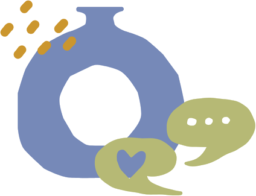
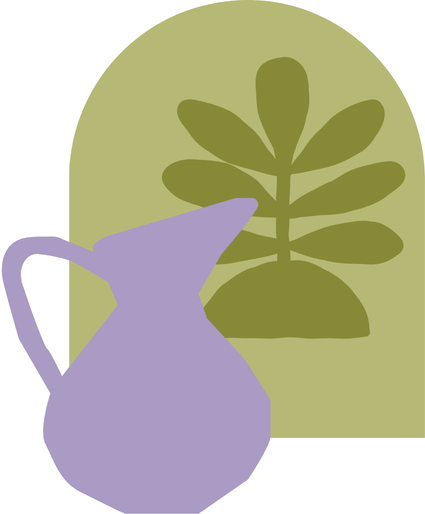

診断当初は、同じ病気の人とつながる機会がなく、孤独を感じていたといいます。 現在は、SNSや患者会を通じて交流する中で、支えを得られるようになったと話しています。 同じ病気の人は必ずいること、そして一人で抱え込まず、頼れる相手を見つけてほしいと伝えています。
患者Aさん（20代・女性）
診断や治療、日常生活を通じて、患者さんそれぞれが感じてきた思いがあります。
同じ病気の方や周囲の人へ向けて伝えたい、経験から生まれた言葉を紹介します。

多くの患者さんが、診断当初は孤独感や不安を強く感じていました。 SNSを通じて同じ病気の人とつながることで、「一人ではない」と感じられたと話しています。 直接交流には抵抗や不安を感じる方もいましたが、距離感を保ちながら情報や気持ちを共有できる場が、心の支えになっているという声が多く聞かれました。
「抗体が検出されなくても諦めないでほしい」「違和感はいつでも医師に伝えてほしい」「合う医療機関や相談できる人を見つけてほしい」 といった経験に基づくメッセージが共有されていました。 支援制度や公的な仕組みを知ること、無理をせず頼れるところに頼ることが、長く病気と付き合う上で大切だと感じている方が多くいました。
診断当初は、同じ病気の人とつながる機会がなく、孤独を感じていたといいます。 現在は、SNSや患者会を通じて交流する中で、支えを得られるようになったと話しています。 同じ病気の人は必ずいること、そして一人で抱え込まず、頼れる相手を見つけてほしいと伝えています。
自分は障害者として生きていくと決め、制度や支援を調べながら生活設計を行ってきたといいます。 SNS上には制度に関する誤情報も多いため、正確な情報を伝えたいという思いから、質問された場合には積極的に応えてきました。 自暴自棄にならず、相談できる人を見つけてほしいこと、制度を活用すれば生活は成り立つということを伝えたいと話しています。
「疲れているだけ」と思っている症状でも、医師に伝えることが診断につながる場合があると感じています。 また、医療者との相性が治療の進み方に大きく影響するため、合う医師や医療機関を見つけることの大切さを伝えています。 SNSを通じて同じ病気の人とつながり、愚痴を言い合える関係が大きな支えになった…一方で、支援制度や自助具について、一元的に分かる情報の必要性も強く感じていると話しています。
SNSを通じて同じ病気の人の投稿を見ることで、「自分だけではない」と感じられたことが心の支えになったといいます。 直接交流には迷いもありますが、段階に応じて安心して参加できる場があればと感じています。 また、検査や治療について「怖い情報」だけでなく、実際には負担が少ない場合もあることを事前に知りたかった…と振り返り、目に見えない病気への理解が社会に広がることを望んでいます。
診断当初は悲観的な気持ちが強かったものの、「落ち着く時はちゃんと来る」と実感するようになったといいます。 Xを通じて同じ病気の人とつながり、治療や手術について情報を共有できたことが、大きな心の支えになりました。 一人で抱え込まず、同じ病気の人に相談してみてほしいこと、そしてネット上で匿名でもつながれる場の大切さを伝えたいと話しています。
病気を受け入れるまでには時間がかかりましたが、現在は無理をせず、頼れる人に頼り、できないことはやらないことを大切にしているといいます。 キャパシティを超えないこと、罪悪感を持たずに休むことが、病気と長く付き合う上で重要だと感じており、同じ病気の人にもそのことを伝えたいと話しています。
診断がつかない時期が長かったからこそ、別の医療機関を探したり、複数の意見を聞くことの大切さを伝えたいと話しています。 Xを通じて他の患者の体験や病院情報に助けられた経験から、同じ病気の人同士がつながれる場の重要性も強く感じているといいます。
見えにくい症状を抱えて生活することは、想像以上に大きな負担を伴います。
指定難病と診断されていても、外見から分かりにくいことで、1日の中で症状に
差があることから、周囲の理解を得にくいと感じている声が多く聞かれました。
遠慮やためらいから、本音を打ち明けられずにきた経験も語られています。病気について発信する人が増え、同じ病気の人とつながる機会は広がっています。
しかし、その一方で、社会全体への理解は十分に浸透しているとはいえず、
見えにくい症状ゆえに、周囲の理解を得にくい現実があります。
身近にいるかもしれない誰かの日常に目を向けること。
それが、理解への第一歩になります。
